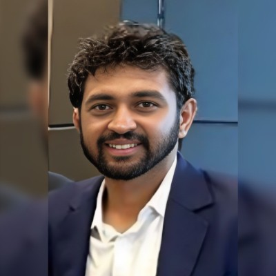

Prasanth Babu
Passionate about investigating the intersection of microbial engineering, plastic circularity, and entrepreneurship. My research focuses on transforming plastic waste into industrial carbon feedstock by decoding the polymer-microbe interface.
The Reality of Plastics
My research confronts uncomfortable truths about the materials we rely on daily. We must move past marketing labels and understand the fundamental biology and chemistry of plastic pollution.
Studies suggest humans ingest roughly 5 grams of microplastics every week—the equivalent of a credit card. They have breached the blood-brain barrier and are now routinely found in human blood and placenta.
Marketed "biodegradable" plastics often fail to degrade within stipulated timeframes. Instead, they are prone to disintegration, leaving harmful micro and nanoplastics in both marine and soil environments.
Current industrial biodegradation standards are fundamentally flawed. Industries capitalize on these loopholes, weaponizing "green" labels for marketing gains while bypassing true ecological safety.
This isn't just a waste crisis. It is 200 million metric tons of untapped, energy-dense carbon. By decoding the polymer-microbe interface, we can engineer microbes to upcycle this hazard into a scalable industrial feedstock.
Research Focus
The plastics industry underpins the modern economy, yet its end-of-life approach is fundamentally flawed. I view plastic pollution not as a waste crisis, but as an untapped opportunity: plastics are abundant, energy-dense carbon feedstocks waiting to be unlocked.
The Evolution of a Bio-Engineer
Microbial Metabolism & Molecular Toolkits
Began with engineering a portable biogas plant, sparking a fascination with microbial metabolism. Honed molecular skills through epigenetic profiling of HOX genes at CSIR-CCMB and developing real-time nucleic acid amplification assays (LAMP, qPCR) at the IIT Madras Bioincubator.
Synthetic Biology & Optogenetics
At the University of Glasgow, expanded into synthetic biology. Profiled complex microbial consortia at restored coal mine sites to understand biochemical gas production—bridging molecular genetics and large-scale environmental microbiomes.
Decoding the Plastic Paradox (PhD Findings)
My doctoral thesis at the IITB-Monash Research Academy tackles the fate, transport, and biological interactions of microplastics, yielding four critical mechanistic contributions:
Demonstrated that nanoplastics release from food-contact plastics (e.g., LDPE-lined cups) during routine use via thermomechanical interfacial detachment, repositioning the onset of human exposure before environmental weathering begins.
Proved that under beach-relevant abiotic stressors, marketed biodegradable plastics (PBAT) persist via surface fragmentation just like conventional LDPE. Compostable classification does not equate to reduced fragmentation risk.
Mapped how polymer-specific weathering dictates early colonization by the marine pioneer Marinobacter adhaerens HP15—driven by topographic entrapment on LDPE and chemical conditioning on PBAT.
Resolved a major paradox: why densely colonized plastics show negligible mass loss. Proved that Carbon Catabolite Repression (CCR) gates polymer catabolism. Microbes prioritize labile carbon over the polymer.
Material & Computational Analysis
- Microscopy: SEM, AFM, TEM, Confocal
- Analytical Chemistry: LC-MS, GC-MS, GPC, HPLC
- Polymer Characterization: TGA, DSC, FTIR, XRD, XPS
- Bioinformatics & Modeling: FBA, Metagenomics, Python
Biological & Environmental Systems
- Synthetic Biology: CRISPR-Cas9/CRISPRi, Strain Engineering
- Metabolic Engineering: ALE, Carbon Catabolite Repression
- Polymer Weathering Kinetics & Nanoplastics Risk Assessment
- ASTM/ISO/OECD Biodegradability Frameworks
The Future: Engineering Plastic Circularity
Understanding the regulatory state of microbes—specifically Carbon Catabolite Repression—is the key to unlocking true plastic circularity. My future work focuses on bypassing these natural metabolic bottlenecks. By combining high-resolution material decoding with synthetic biology and curated metabolic engineering, we can rewire microbial pathways to actively prioritize and upcycle plastic-derived carbon. This precision translates a persistent environmental hazard into a programmable, scalable industrial feedstock for the bio-economy.
Selected Publications & Talks
- Under Review Time-dependent release and intake assessment of nanoplastics from paper cups.
- Under Review Impact of accelerated weathering on non-compostable and compostable plastic bags.
- Under Review Differential early colonization of Marinobacter adhaerens HP15 on plastics.
- Invited Speaker "Shaping the fate of microplastics" & "Pioneer colonization on plastic"
Entrepreneurship & Experience
Led the Biosciences team in validating plastic biodegradation via ISO and ASTM standards for a diverse portfolio of global clients. Beyond routine compliance, I architected testing frameworks that serve as foundational resources for future regulatory standards and scalable biomanufacturing validation.
Supervised an undergraduate team project on CRISPR-Cas13 bioassays, bridging synthetic biology concepts with practical execution. Led the team to win the "People's Choice" award at the Australasian Synthetic Biology Challenge 2023.
Navigated the leap from academic hypothesis to commercial biotechnology. Secured funding through IIT Bombay's IDEAS Program to develop genomic solutions for environmental health. Recognized as a Eureka! finalist.
Mapped the surface chemistry evolution and microbial colonization dynamics of marine plastics. Bridged material characterization with biological systems to inform the design of scalable biotransformation systems.
Academic Background
Thesis Submitted: Fate and Transport dynamics of microplastics in the aquatic environment. Focused on the intersection of polymer weathering and microbial colonization to develop frameworks for upcycling plastic waste.
Affiliated with the College of MVLS and the Adam Smith Business School. Awarded the University Leadership Scholarship (£10,000).
Affiliated with Sree Sastha Institute of Engineering and Technology, Chennai.